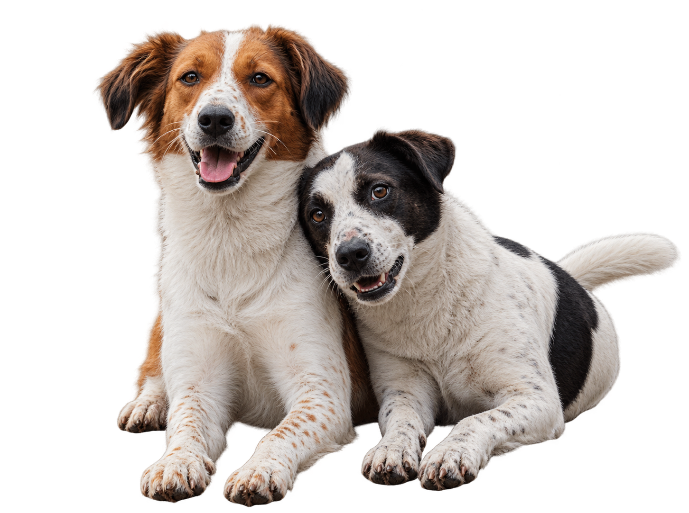

ADOPTA HUELLAS
Encuentra a tu nuevo mejor amigo.
Hay una huella esperando convertirse en parte de tu familia.
Ver animales →
ADOPCIÓN
Encuentra a tu compañero ideal
Conoce algunos de nuestros animales que están esperando encontrar un hogar lleno de amor.


EL PROCESO
Adoptar es más fácil de lo que imaginas
Te acompañamos durante todo el proceso para que encontrar a tu nuevo compañero sea una experiencia especial.
01
Conoce
Descubre nuestros animales y conoce sus historias, personalidades y necesidades.
02
Conecta
Encuentra ese compañero con el que sientas que existe una conexión especial.
03
Adopta
Completa el proceso de adopción y prepárate para comenzar una nueva historia juntos.

SOBRE NOSOTROS
Creemos que todos merecen un hogar.
En Adopta Huellas trabajamos para conectar animales que necesitan una segunda oportunidad con personas dispuestas a cambiar sus vidas.
Nuestro objetivo es que cada adopción sea responsable, consciente y, sobre todo, una historia que dure para siempre.
Conoce nuestra historia →DA EL PRIMER PASO
Quizás tu nuevo mejor amigo te está esperando.
Hay muchas historias esperando comenzar. ¿Te animas a escribir la siguiente?
Quiero adoptar →